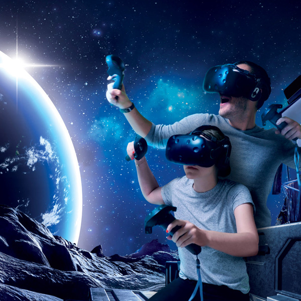
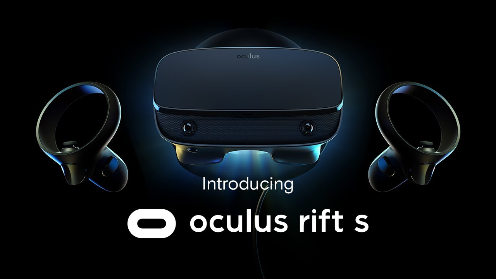
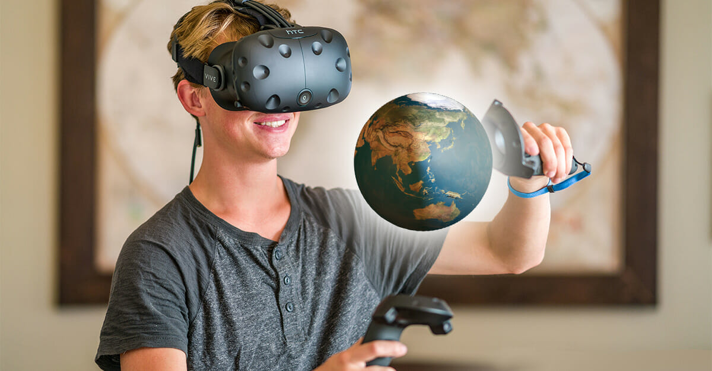
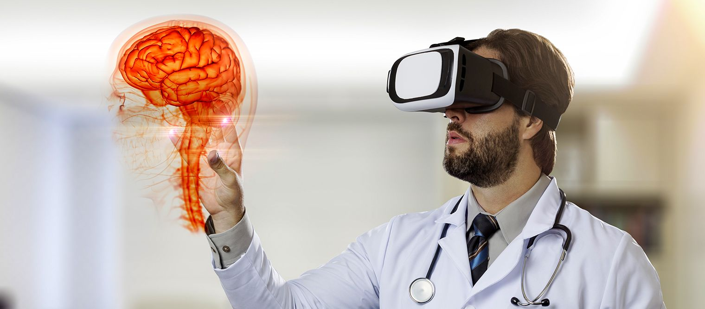
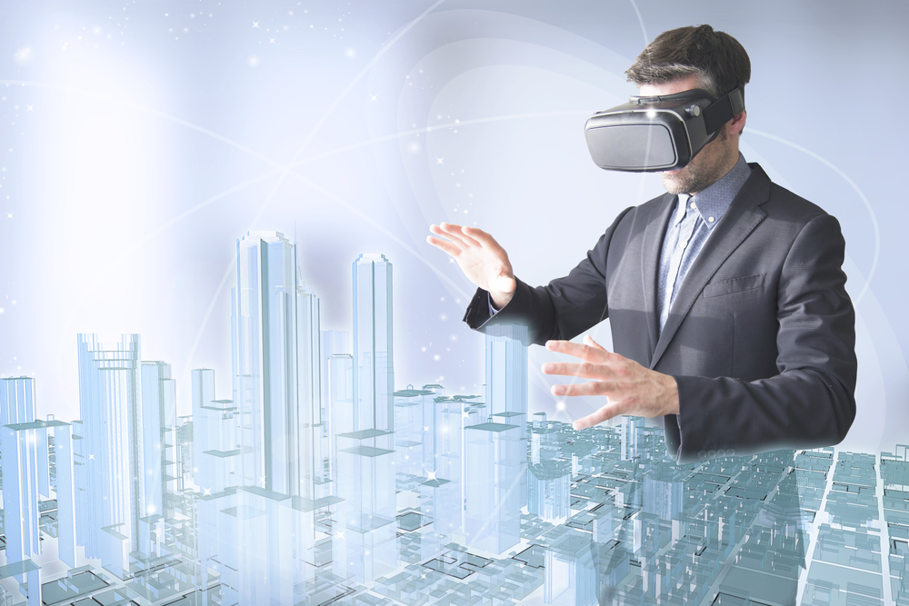

Technologies are developing rapidly, and now we have so many of them that we have not even heard of
them all. And many
of them make our lives easier. So I want to talk about virtual reality devices.

Virtual reality (VR) is a completely digital world created
using computer systems that provide "immersion" in the virtual world and complete
spectrum of sensations (visual, sound, tactile and others). Such
technologies are widely used in the field of entertainment, education, modeling, etc.

To use virtual reality, the user will need to have a virtual reality helmet (such as oculus rift) which
consists of a
built-in helmet screen (or two screens, one per eye) which feeds two images for the left and right eyes.
The user will also need a powerful, computing device (eg computer, game
console).
Virtual reality in Education

Virtual reality can help teachers and students:
- better perceive complex information and gain new skills;
- process a lot of information and present it in an
interactive form;
- demonstrate and apply the theory during the lesson;
- understand how to use this knowledge in practice;
- encourage students to the learning process.
Exciting learning process.
With the help of virtual reality, students can visit any place on earth without leaving the classroom or
home. It is not
only about the tourist cards of Paris or London, but also about the depths of the ocean, outer space and
even the
construction of atoms. In one of the episodes of the cartoon "Year and Morty" there is an episode of
"Park of Anatomy",
in which Rick reduces Morty and sends him to travel inside the body. Now you can experience such an
experience with the
help of Anatomyou VR 2.0 technology, which, of course, will not reduce any of the students, but will
show how our organs
look and function. No less exciting technology is offered by Unimersiv, which has developed a virtual
tour of the human
brain.
Virtual reality in Medicine

Virtual reality technologies are already involved in various areas of medicine. The process of training
healthcare
professionals through VR is extremely important. Weill Cornell Medical College (New York, USA) has a
virtual reality
room with a simulator for surgeons. No practice on corpses, let alone living patients!
VR makes it possible to fight phobias and fears.
At the Institute of Creative Technology (Southern California, USA), virtual reality helps veterans get
rid of
post-traumatic stress disorder. There is a case when one of the former riot policemen suffered severely
because he was
sure that he did not do everything to save his comrade. Doctors with the help of a shooter recreated a
real scene from
life, in which the patient was convinced - he did everything he could. His condition has significantly
improved.In addition, virtual reality cures phobias. With Hiderlab's Spiderworld program, people are
learning to overcome their
panic fear of spiders. And the SnowWorld application allows you to throw snowballs at penguins in a
"winter"
environment. This reduces the pain in those who have received burns.
Virtual reality in Business

The business is constantly implementing new technologies. After all, with their help the products are
modernized and it
is possible to attract a new audience. We are actively moving to a new paradigm - the economy of
impressions, and VR is
more relevant here than ever, because almost any process in the physical world can be modeled,
reproduced and presented
to the client to gain a new individual experience.
VR allows you to develop prototypes of new products and make presentations. The use of VR
in marketing and advertising
is becoming more common. Coca-Cola was one of the first companies to try a virtual experience in a
Christmas advertising
campaign. VR is also modernizing sales methods. The concept of "try before you buy" is used even in
those areas where it
takes some time to get the finished service and product. For example, architectural firms or design
studios create 3D
models and panoramas of not-yet-finished objects. The Audi VR project allows the customer to choose the
car of their
dreams, testing all the details and features before the test drive of the car.
New words:
Virtual Reality-Віртуаль Реальність
Implementing-Впровадження
Performed-Виконав
Immersion-Занурення
Entertainmen-Розваги
Helmet-Шолом
Exciting-Захоплююче
Fears-Страхи
Shooter-Стрілець(або стиль гри стрілянина)
Significantly-Показово